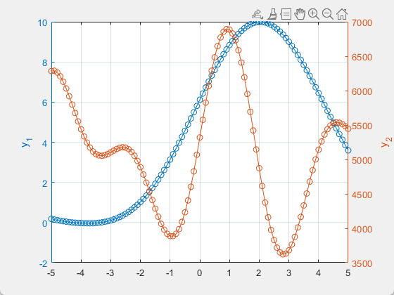
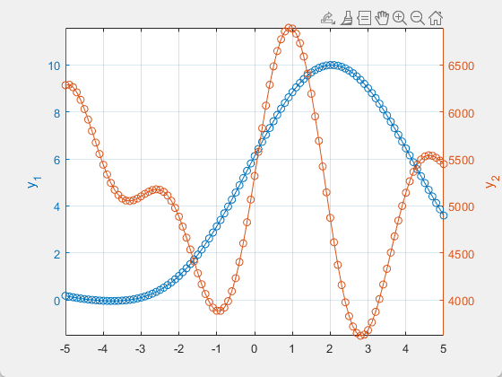
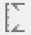
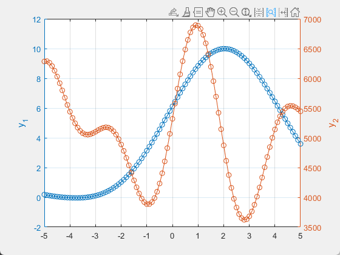

yytick
align ticks on both y-axes of a yyaxis plot with nice values
Contents
Syntax
yytick
adjusts the axes limits of both y-axes of a yyaxis plot to allow 'nice' tick values appearing at the same canvas height, so the major y-axis grid lines on both sides coincide.
For that purpose, it also sets the tick values mode on one side (the dependent side) to 'manual' and computes the tick values on this side at equal heights as the ticks on the other side (the primary side) where the tick values mode is 'auto'.
Use yyzoom to keep the (dependent) tick values updated when zooming.
[ax, yyLim, pInd] = yytick;
returns the axes object ax, the computed y-limits in a 4-element vector yyLim = [y1Low, y1Up, y2Low, y2Up], and the linear index of the primary y-axis ruler pInd.
____ = yytick(ax);
acts on the axes object ax (default: current axes, gca).
The default behaviour of yytick should be adequate for most use cases.
Use the optional parameter/value-pairs for more detailed control:
____ = yytick(____, 'parameter', value); ____ = yytick(____, parameter=value);
- 'primaryside'
'left', 'right', 'current', or 'auto' (default)
Specify the primary side. 'current' selects the current value of the YAxisLocation property of the axes. 'auto' selects the side with less added canvas space penalty. - 'limits'
4-element vector, [y1Low, y1Up, y2Low, y2Up]
Specify the limit values of the left and right y-axes that must be covered by the values computed with yytick. If not specified or empty (default), the covered limits are derived from the existing axes (see 'limitmethod'). - 'limitmethod'
'tickaligned', 'tight' (default), 'padded', or 'none'
Specify the method to determine the covered limit values of both axes. 'none' selects the current axes limits. - 'applylimits'
true (default) or false
Specify whether yytick applies the computed limits and ticks to the axes or only returns the limit values. - 'tickratio'
vector, increasing values within [1,10) (upper-exclusive)
Specify the allowed multipliers, except for their powers of ten (computed by yytick), between the primary and the dependent side. The default is [1, 1.5, 2, 3, 4, 5, 8]. - 'ratioweight'
vector of the same size as the tickratio value, or zero
To have a penalty value for the different multipliers, the added white canvas space when adjusting the limits is divided by the corresponding value in ratioweight. yytick selects a multiplier with a minimum penalty value. If not specified or zero (default), it is set to be all ones for each multiplier, unless 'tickratio' is set to default values, in which case it is [15, 5, 12, 6, 9, 10, 7], preferring multiplier 1 the most. - 'fixside'
'left', 'right', 'primary', 'dependent', or 'none' (default)
Specify a side where the axes limits (but not necessarily the tick values) remain unchanged.
Note that
yyaxtoolbar
provides axes toolbar support for yytick.
Example
% --- sample data x = -5:0.1:5; y1 = 4+5*sin(0.5*x+pi/6) + sin(x-pi/8); y2 = 2e3+3.1*(1000 + 333*sin(1.25*x+pi/6) + 250*sin(2*x-pi/8)); % --- plot data with yyaxis figure yyaxis left plot(x,y1,'o-') ylabel('y_1') grid on yyaxis right plot(x,y2,'o-') ylabel('y_2')
This code produces a standard yyaxis chart:

% --- align ticks
yytick

The ticks of the y-axes are now aligned, i.e. at equal canvas height.
Add axes toolbar support for yytick:
% --- replace default toolbar with yy-axtoolbar (optional)
yyaxtoolbar
E.g. selecting "Tick-Aligned Limits" from the drop-down menu of the yy-axtoolbar

sets the limits of both y-axes to tick-aligned values while keeping the ticks on both sides at equal canvas height.

Background
yytick restricts the ratio of the new y-axes lengths (yLen = upper limit minus lower limit) to certain values m, so that when Matlab® determines the tick values of the primary y-axes, the tick values of the dependent y-axis at the same canvas height are easily readable (yLenDependent = m * yLenPrimary).
Limitations
- yytick is designed for linear axis scaling.
- Matlab® may recompute the y-axes ticks after axes size or plotted data changes. Call yytick after such changes.